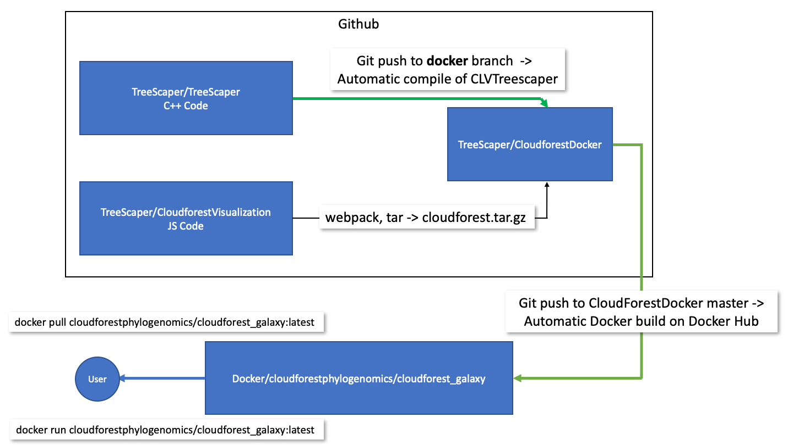
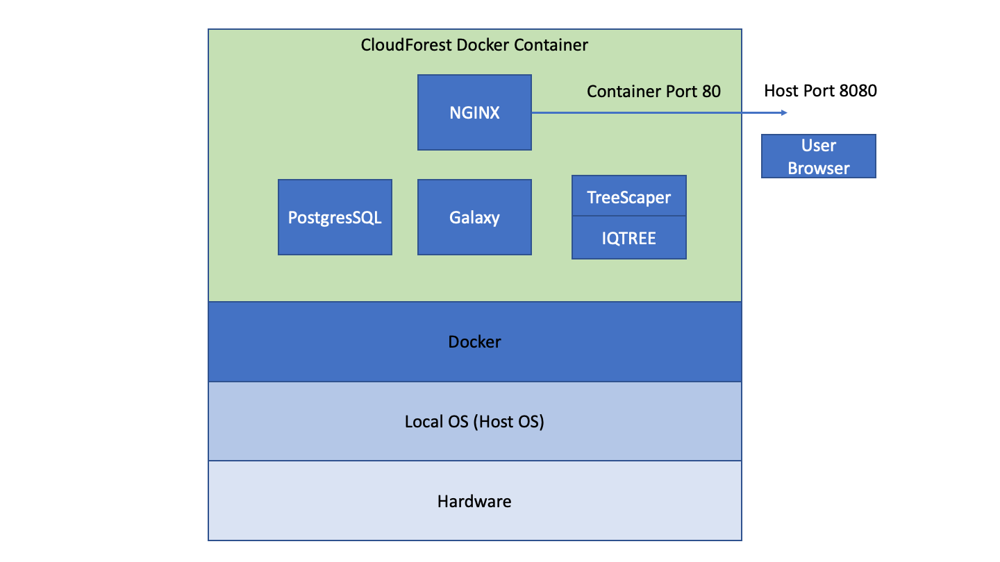

CloudForest is comprised of three separate code units:
TreeScaper
The command line application
CloudForest Visualization
JS code for visualizing TreeScaper output
CloudForest Docker
Docker and ancillary files for bundling the application into a Galaxy workflow image
The code units are brought together to build and publish a Docker container on Docker Hub.

The TreeScaper repo contains C++ code for producing CLVTreeScaper. Currently, the docker branch uses github actions to automatically compile and generate the CLVTreeScaper executable as an artifact. Compilation begins on any push to the branch. The status of continuous integration can be seen on the repo’s README page.
TreeScaper is compiled with a Makefile using g++ as the compiler. The CI action uses Ubuntu-18.04 as the compile environment.
CLAPack-3.2.1 is a library dependency for TreeScaper. The library is compiled and linked during the Makefile run.
The CloudForestVisualization repo contains primarily JS code. It produces a tar ball of code and configuration files for use as a Galaxy visualization plugin.
The JS application relies on pure JS with the addition of Plotly JS and D3 JS for specific plots. Many of the more complex graphs and trees are rendered directly as 2D canvas elements. This allows for optimized rendering.
Webpack is used to bundle the JS code into a single, deployable application from multiple ES6 modules. In addition, Webpack allows for tree shaking. Using Webpack tree shaking, dead code paths can be removed from the final bundle. This minimizes the final size of the deployed JS code. Webpack bundling and tree shaking have no effect on run-time behavior.
A release for this repo is the tarball cloudforest.tar.gz. This release artifact cannot be run on its own, instead it is an input into the final repo: CloudForestDocker. The tarball is structured according to the requirements of the Galaxy visualization registry.
The CloudForestDocker repo contains all the files needed to build a functional Docker image.
The primary file is named Dockerfile, which contains the docker commands needed to build a valid image.
In addition, there are multiple files and directories used in constructing the CloudForest Galaxy container
The CloudForestDocker repo is linked to the Docker Hub website. When there is a push to the repo’s master branch, the CloudForest container image is built on Docker Hub automatically. On a successful build, the latest image is published on the hub and is available for use.

The CloudForest application is a Docker container of a linux-based web application. It can run on any OS that supports Docker engine (Windows, Linux and macOS) and it will behave the same across all OS platforms.
Users access CloudForest via their web browser. From the browser, data files can be uploaded to and downloaded from CloudForest. Job runs occur within the running container. That is, even when a user is accessing CloudForest from a Windows computer, CLVTreescaper will run within a linux virtual machine.
CloudForest can be configured to use external compute clusters. This functionality is not enabled for the current release.
Docker containers run within a non-local environment, once the Docker engine stops the container all state is lost. Running CloudForest with the following command
docker run -d -p 8080:80 --name cf_galaxy -e "GALAXY_DESTINATIONS_DEFAULT=local_no_container" -e "GALAXY_SLOTS=4" cloudforestphylo/cloudforestgalaxy:latestwill not let the user save data files. If they have downloaded the files into their local filesystem the data is, of course, saved. Docker has two methods for persisting data from the container into the local file space: volumes and bind mounts.
Docker volumes are similar to containers and are fully managed via docker commands. Data is persisted within a volume and any volume can be shared between containers. For CloudForest, volumes are now preferred to bind mounts.
Volumes are portable between containers. Using volumes with CloudForest creates the ability of a user sharing an entire workflow, including results, with another user. The second user gets an exact replica of data and program state. Data sharing via volumes is much simpler and cleaner than passing around naked data files. This use case is something to keep in mind as we go forward on the project.
Data persistence with volumes can be achieved by 1) creating the volume, and 2) running the Galaxy container with volume mapped in:
docker volume create cloudforest-volume
docker run -d -p 8080:80 --name cloudforest --mount source=cloudforest-volume,target=/export/ -e "GALAXY_DESTINATIONS_DEFAULT=local_no_container" -e "GALAXY_SLOTS=2" cloudforestphylo/cloudforestgalaxy:latestDocker bind mounts are the original method for persisting data out of a running container. This method is not preferred, but instructions are listed below for interested users.
Bind mounts open a filesystem channel from the container out to the host file system. When mounted, the container will write files directly to host space. This is the general form of the command:
docker run -d -v /local/system/path/target:/app container-nameThe -v argument maps the container directory /app to the host directory /local/system/path/target. Any file the containerized application writes to /app is written into the host file system. When the container is stopped, the data continues to exist on the host. The mapping works in both directions. A user can add files into the host directory and the files are visible from within the running container.
Note: On MacOS the host directory used for the bind mount may need allowed in Docker Desktop. This can be done by navigating to Preferences -> Resources -> File Sharing and adding the directory the list found there.
Starting CloudForest using bind mounts:
docker run -d -p 8080:80 --name cloudforest -v /home/jdoe/galaxy_storage/:/export/ -e "GALAXY_DESTINATIONS_DEFAULT=local_no_container" -e "GALAXY_SLOTS=2" cloudforestphylo/cloudforestgalaxy:latestThe LHS of the colon can be any legal, local OS path. The RHS of the colon must be /export/. The base Galaxy image has been coded to use /export/ as its app root directory.
As long as the LHS path is used for each application start, CloudForest will use the DB and files saved from the last run. If another LHS path is used, CloudForest will start with a blank DB and no data files.
You can see why using Docker volumes is a clean method of data transfer. Bind mounts tie saved data to the local file system structure, while Docker volumes abstract away the local environment. This abstraction does come at the cost of using more Docker commands. Nullum gratuitum prandium.
All CloudForest inputs and outputs are stored and managed within the Galaxy application. The Galaxy database tracks data files by maintaining the file system path to the data file. Galaxy standardizes file names to the basic form /path/to/all/files/000/265/dataset_265905.dat where the number monotonically increases. The human readable name, alces_alces.boottree is stored as well within the schema.
User access to data files must be through the UI since the names and types of files are obscured if viewed directly via the file system.
The data files are not stored as BLOBS in the database. Links and relationships are maintained by Galaxy, the raw data is maintained by the file system.
For beta testing we have a web installation created at:
http://cloudforest.umn.eduThe port, 8080, generally used in docker containers is not being used in the beta installation. Instead we are using port 80 since there is only one application running on the virtual server. Port 80 is the defaualt port for HTML, and so does not need to be references in the address.
The visualization code resides in this git repo. The Webpack build can be started from the npm script build or more completely from the script package. The package script uses Webpack to generate a bundled JS app. Then a bash script is run to generate a Galaxy compliant tarball for use in the docker image.
Each plot is coded in its own ES6 module. With general page behavior set in in separate modules. No module has access to any other module. All communication is done through the web API Event interface. Code modules listen for, via eventListner, or send out events, via dispatchEvents, in response to a user’s actions.